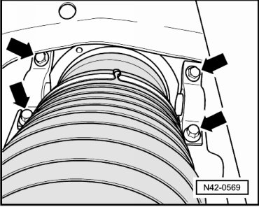
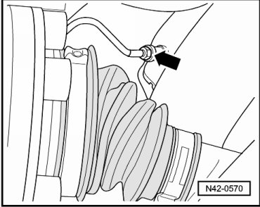
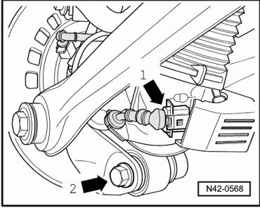
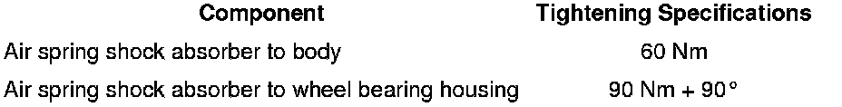

Air Spring Damper
Air Spring Damper
Special tools, testers and auxiliary items required
• Torque wrench (VAG 1331)
• Torque wrench (VAG 1332)
Removing
CAUTION!
Before starting work, stabilizer bars must be coupled in vehicles with separable stabilizer bars. Otherwise, there is the danger of injury caused by unintentional separation.
During assembly work, make sure that no indentations form on the boot of the air spring shock absorber!
- Remove air spring shock absorber bolts - arrows -.

- Remove air line - arrow - from air spring shock absorber and seal both connections.

- Disconnect harness connector - arrow 1 - from dampening adjustment valve.

- Remove air spring shock absorber from wheel bearing housing - arrow 2 -.
To remove air spring shock absorber, wheel bearing housing must be slightly pulled down.
Installing
Installation is performed in the reverse order of removal.
Tightening Specifications
